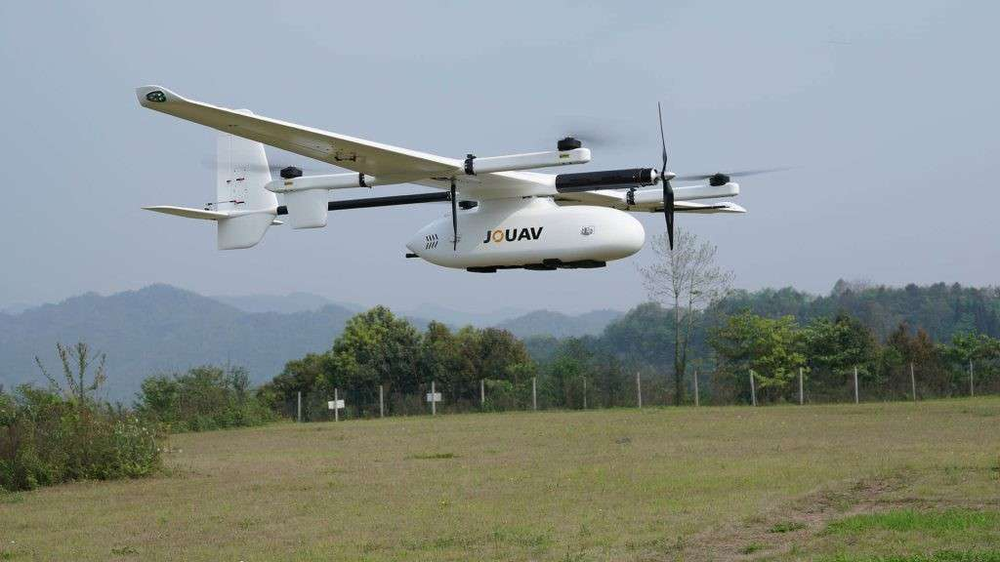

Fixed‑Wing Mapping Drone
Covers large farms quickly to capture high‑resolution imagery and NDVI maps for crop health analysis.
Buy Drone ↗Agricultural drones help farmers see their fields from the sky, detect problems early, and apply inputs only where needed. They are a key part of precision farming.
With high‑resolution cameras, multispectral sensors and GPS, drones can scan hundreds of acres in a short time and convert raw images into decision‑making maps for farmers and agronomists.
These examples show how different drone designs are used for mapping, spraying and seeding in the field.
Covers large farms quickly to capture high‑resolution imagery and NDVI maps for crop health analysis.
Buy Drone ↗Uses an onboard tank and nozzles to apply pesticides and nutrients precisely in problem zones.
Buy Drone ↗Equipped with spreaders to distribute seeds or granular fertilizers uniformly across the field.
Buy Drone ↗Uses thermal sensors to detect water stress, irrigation issues and canopy temperature variations.
Buy Drone ↗Drones (Unmanned Aerial Vehicles – UAVs) are small flying machines controlled by a remote controller or pre‑programmed flight plan. They carry different types of sensors and payloads:
Different drones are used for different purposes on the farm. Below are the main categories:
Yes. When operated with correct height, speed and nozzle size, drones are safe and often more uniform than manual spraying.
Individual ownership may be costly, but small farmers can benefit through custom hiring centres, FPOs, or government‑supported drone services.
Farmers typically see coloured maps showing healthy and stressed zones, along with simple reports and recommendations prepared by experts or the software.